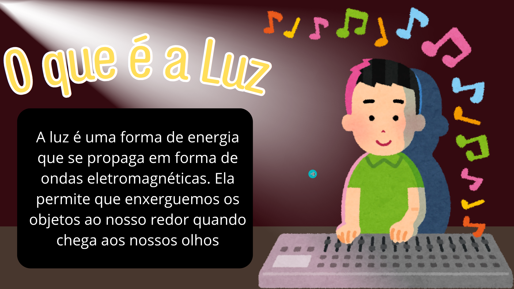
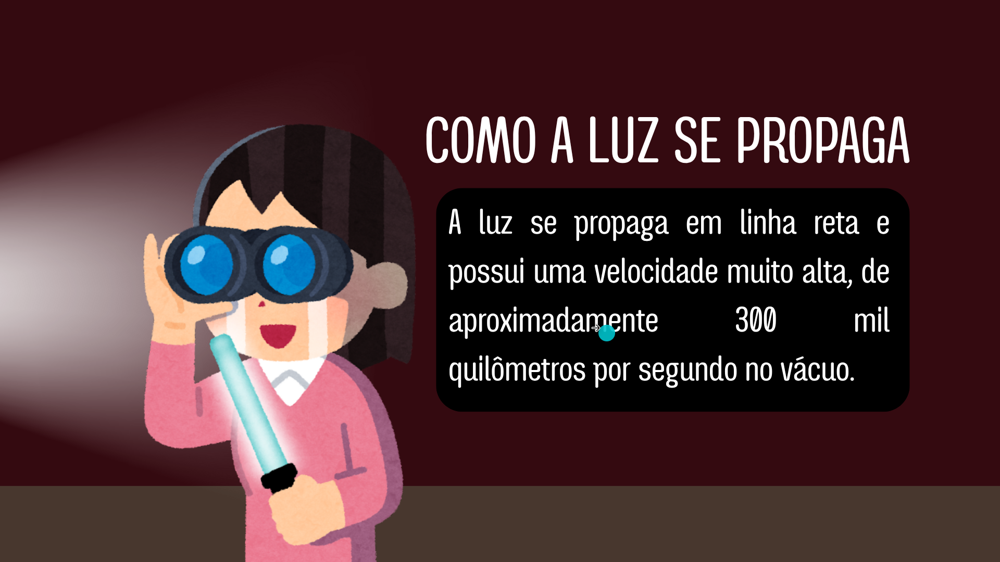
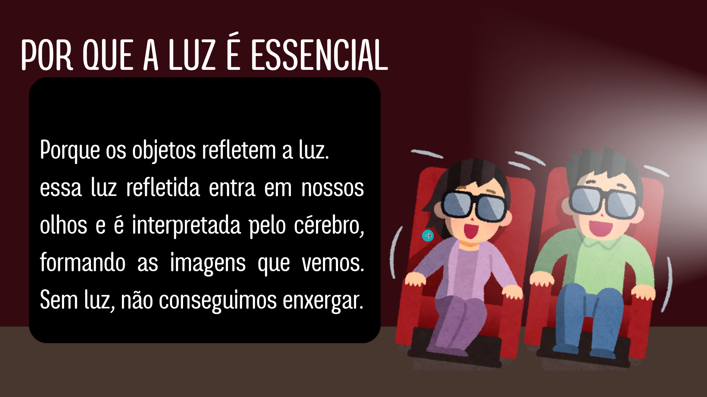
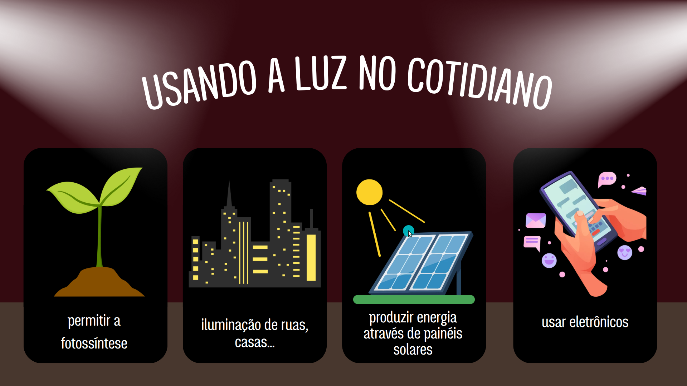
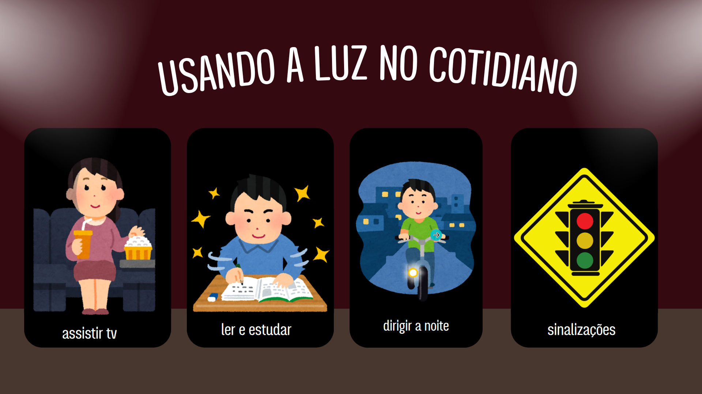

A luz
Matéria: Tec.Ciencia/Fisica | Data: Agosto de 2026
O que é a Luz
A luz é uma forma de energia que se propaga em forma de ondas eletromagnéticas. Ela permite que enxerguemos os objetos ao nosso redor quando chega aos nossos olhos

Como a luz se propaga
A luz se propaga em linha reta e possui uma velocidade muito alta, de aproximadamente 300 mil quilômetros por segundo no vácuo.

por que a luz é essencial
Porque os objetos refletem a luz. essa luz refletida entra em nossos olhos e é interpretada pelo cérebro, formando as imagens que vemos. Sem luz, não conseguimos enxergar.

Conclusão

